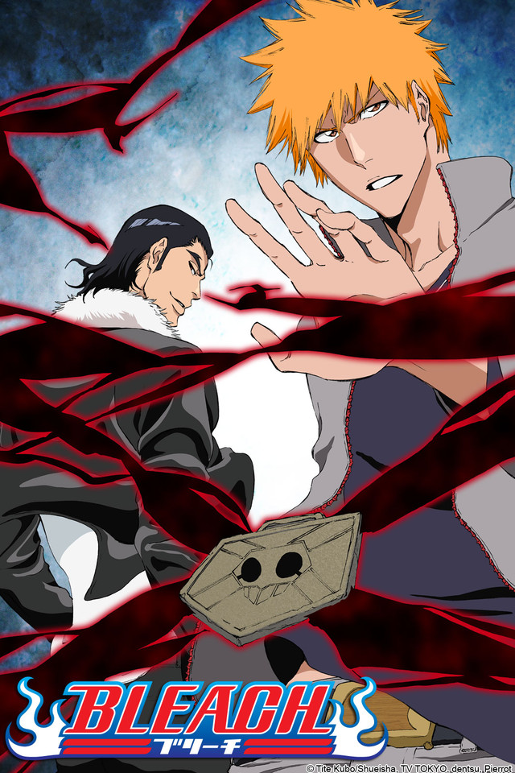
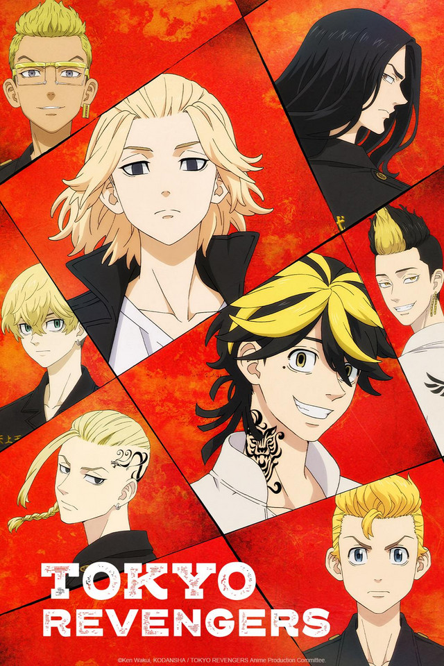
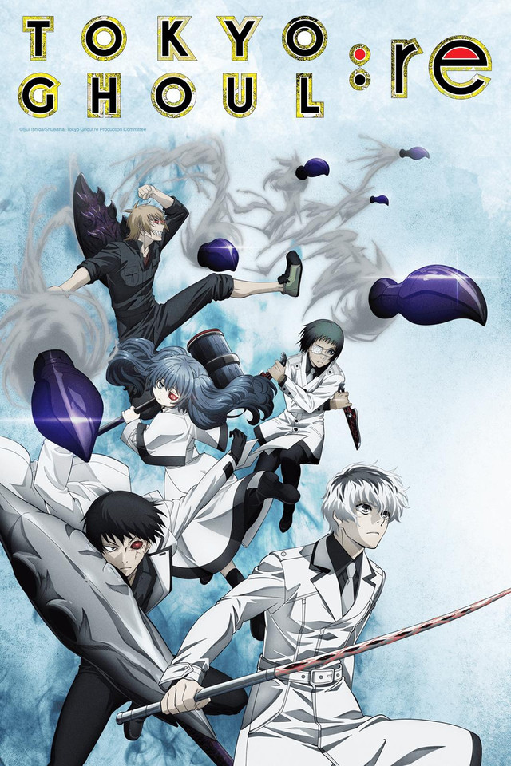

Bleach
 Acción, aventura, sobrenaturalIchigo Kurosaki es un estudiante de instituto de 15 años, que tiene una peculiaridad: es capaz de ver, escuchar y hablar con fantasmas. Pero no sabe hasta dónde puede abarcar la clasificación de espíritus, ni lo que conlleva el saberlo. Un buen día una extraña chica, de pequeña estatura y que viste ropas negras de samurai, entra en su cuarto. Se llama Rukia Kuchiki, y es una Shinigami (Dios de la Muerte). Ante la incredulidad de Ichigo, le explica que su trabajo es mandar a las almas buenas o plus a un lugar llamado la Sociedad de Almas, y eliminar a las almas malignas o hollows.
SPY x FAMILY
 Acción, Comedia, Ficción de espionaje
Acción, Comedia, Ficción de espionaje
Todo el mundo tiene una parte de sí mismos que no puede mostrar a los demás. En una era en la que las naciones de todo el mundo se encuentran involucradas en una feroz guerra de información a puerta cerrada, Ostania y Westalis llevan décadas en guerra fría. La División de Inteligencia de Westalis (WISE) envía a su mejor espía, "Twilight", en una misión ultrasecreta para vigilar los movimientos de Donovan Desmond, quien dirige el Partido Nacional por la Unidad de Ostania, responsable de bombardear los esfuerzos de paz entre ambos países.
My Hero Academia
 Acción, drama, escolar, shonen, superhéroes
Acción, drama, escolar, shonen, superhéroes
Izuku ha soñado con ser un héroe toda su vida: un objetivo elevado para cualquiera, pero especialmente desafiante para un niño sin superpoderes. Así es, en un mundo donde el ochenta por ciento de la población tiene algún tipo de "peculiaridad" superpoderosa, Izuku tuvo la mala suerte de nacer completamente normal. Pero eso no es suficiente para evitar que se inscriba en una de las academias de héroes más prestigiosas del mundo.
Skeleton Knight in Another Wordl
 Isekai, fantasía, aventura, acción, videojuegos
Isekai, fantasía, aventura, acción, videojuegos
Cuando Arc despierta, descubre que lo han transportado a otro mundo en el cuerpo del personaje con el que estaba jugando en un MMO. Aunque por fuera parece una armadura completa, en su interior no hay más que un esqueleto, así que es el Caballero Esqueleto. Si se descubriera su identidad lo confundirían con un monstruo ¡y le darían caza! Por esto mismo Arc decide vivir como un mercenario para no atraer miradas ajenas. Sin embargo, no es el tipo de hombre que pueda quedarse de brazos cruzados cuando ve cometerse injusticias ante sus ojos.
Attack on Titan
 Acción, fantasía oscura, drama apocalíptico
Acción, fantasía oscura, drama apocalíptico
Muchos años atrás, la humanidad estuvo al borde de la extinción con la aparición de unas criaturas gigantes que devoraban a todas las personas. Huyendo, la humanidad consiguió sobrevivir en una ciudad fortificada de altas murallas que se ha convertido en el último reducto de la civilización contra los Titanes que campan a sus anchas por el mundo. Ahora esa paz está a punto de verse interrumpida por una cadena de acontecimientos que llevará a desvelar qué son los Titanes y cómo aparecieron.
Shikimori's Not Just a Cutie
 Comedia romantica
Comedia romantica
Shikimori parece ser la novia perfecta: linda, divertida y dulce como nadie... pero en realidad tiene cierto lado más oscuro que sale a la luz bajo ciertas circunstancias. ¡Pero eso no es un problema para Izumi, su novio, quien adora ver ese lado de su pareja! Una comedia romántica con cierta peculiaridad.
JUJUTSU KAISEN
 Aventura, fantasía oscura, sobrenatural
Aventura, fantasía oscura, sobrenatural
Dificultades, arrepentimiento, vergüenza… Los sentimientos negativos de los humanos se convierten en Maldiciones que nos acechan en nuestra vida diaria. Las Maldiciones campan a sus anchas por todo el mundo, y pueden llevar a las personas a sufrir terribles desgracias e incluso dirigirlas a su muerte. Y lo que es peor: solo una Maldición puede exorcizar otra Maldición.
Tokyo Ravenger
 Acción, comedia, ciencia ficción, drama, romance, escolarTakemichi Hanagaki es un trabajador que ha tocado fondo en la vida. Entonces descubre que la única novia que tuvo jamás, en sus años de secundaria, la joven Hinata Tachibana, ha muerto a manos de la pandilla Tokyo Manji. El día que descubre la noticia de su muerte, está en la estación de tren cuando alguien lo empuja a las vías. Cierra los ojos pensando que está a punto de morir, pero cuando los abre, sin saber cómo, ha retrocedido 12 años en el tiempo. Ahora podrá revivir aquellos días que él consideraba los mejores de su vida y Takemichi intentará vengarse de su vida.
Hunter x Hunter
 Acción, aventura, fantasía oscura, Comedia dramática
Acción, aventura, fantasía oscura, Comedia dramática
Gon, un joven que vive en Isla Ballena, sueña con convertirse en un Cazador como lo era su padre, el cual se fue cuando Gon todavía era un niño.
Tokyo Ghoul
 Fantasía oscura, horror, thriller acción, drama, romanceDos años después de la incursión en Anteiku, el CCG selecciona al joven Haise Sasaki para liderar un equipo rebelde de humanos infundidos con poderes ghoul.